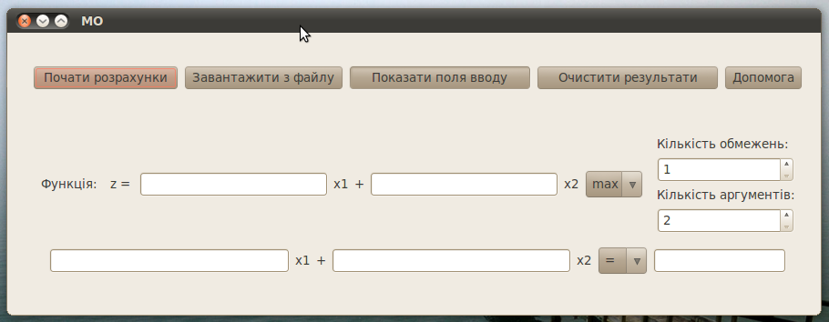
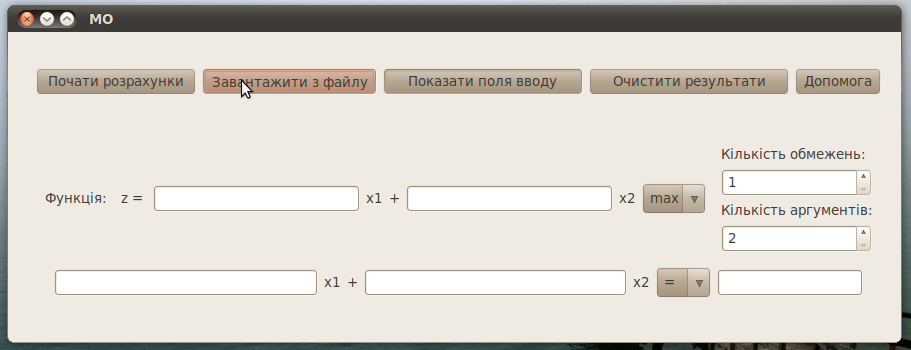
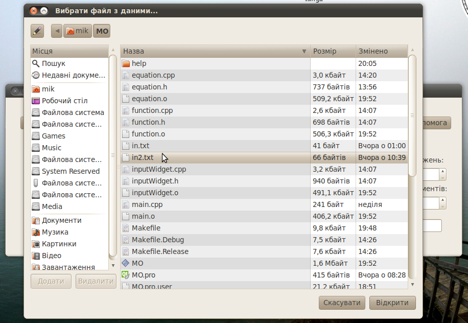
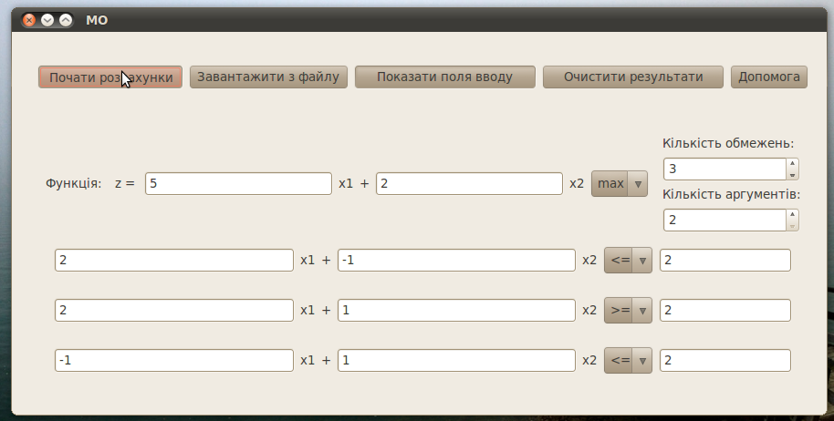
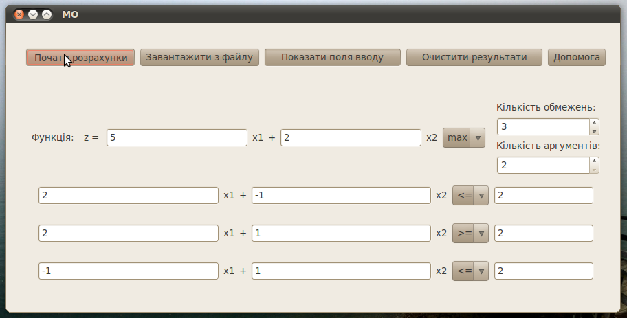

1. Інтерфейс
2. Уведення данних
3. Виконування обрахунків
4. Формат даних у вхідному файлі
1. Інтерфейс
Нагору
Стартовий інтерфейс програми виглядає так:

З цього вікна можна одразу перейти до розрахунків, відкрити хелп, або просто погратися з анімацією.
Нагору
2. Уведення данних
Нагору
Задачу до програми можна ввести двома способами:
Для введенння з файлу достатньо просто натиснути кнопку "Завантажити з файлу".

та вибрати файл, записаний у правильному форматі.

Другий метод - уведення прямо у графічному інтерфейсі. Спочатку за допомогою маніпулятора миш вибираємо кількість обмежень і змінних. На формі з'явиться відповідна кількість полей уведення. За допомогою клавіатури уведіть всі коефіцієнти функції і рівнянь.

Нагору
3. Виконування обрахунків
Нагору
Увівши всі потрібні для задачі дані просто натисніть "Почати розрахунки".

Нагору
4. Формат даних у вхідному файлі.
Нагору
Правильний формат такий:
m
n
c1 c2 ... cn [max|min]
a11 a12 .. a1n [<=|=|>=] b1
a21 a22 .. a2n [<=|=|>=] b2
...
am1 am2 .. amn [<=|=|>=] bm
Перше число - кількість обмежень. Друге - кількість змінних. Далі, на наступному рядку вводяться коефіцієнти функції (n штук) та напрямок (мініізація чи максимізація). Далі йде m штук обмежень. У кожному з них спочатку n коефіцієнтів, потім знак нерівності і число. Наприклад:
3
2
5 2 max
2 -1 <= 2
2 1 >= 2
-1 1 <= 2
Нагору